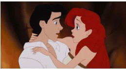

בת הים הקטנה הוא הסרט ה-28 המופק על ידי החברה, הסרט הראשון בתקופת "הרנסאנס של דיסני" והראשון בסדרת הסרטים של בת הים הקטנה. הסרט מבוסס על האגדה הדנית "בת הים הקטנה" מאת הנס כריסטיאן אנדרסן שפורסמה לראשונה בשנת 1837.
פילמוגרפיה
הופק בידי: ג'ון מסקר והווארד אשמן
מבוסס על: בת הים הקטנה (אגדה מאת הנס כריסטיאן אנדרסן)
בימוי: רון קלמנטס וג'ון מסקר
תסריט: רון קלמנטס וג'ון מסקר
עריכה: ג'ון קרנוצ'ן ומארק הסטר
מדינה: ארצות הברית
חברת הפקה: אולפני ההנפשה של וולט דיסני
חברה מפיצה: חברת וולט דיסני
הקרנת בכורה: 14 בנובמבר 1989
סוגה: רומנטי, מוזיקלי, פנטזיה, ילדים, מונפש מסורתית, מלודרמה, מחזמר
משך הקרנה: 85 דקות
פרסים: פרס אוסקר לפסקול המקורי הטוב ביותר ופרס אוסקר לשיר המקורי הטוב ביותר
סרטי המשך: בת הים הקטנה 2: השיבה לים ובת הים הקטנה 3: סיפורה של אריאל
תקציר
הסיפור המקורי של בת הים הקטנה, אכזרי ואפל הרבה יותר מזה של דיסני. גם בסיפור המקורי בת הים הקטנה אכן רואה את הנסיך מרחוק על הספינה, מצילה את חייו ובכך מתאהבת בו, אבל בגרסה זו הוא אינו מבחין בה. בשני המקרים היא חותמת על אותו ההסכם בו היא תוכל להישאר בת אדם רק אם תגרום לנסיך להתאהב בה ולהתחתן איתה, אך בסיפור המקורי אם זה לא יקרה, היא גם תצטרך לוותר על חייה. בנוסף בסיפור המקורי היא אמנם מקבלת רגליים, אבל בתמורה לאפשרות ללכת היא חווה כאבי תופת כתוצאה מכל צעד שהיא עושה. כשהנסיך מתחתן עם אחרת במקומה, היא יכולה לבחור להרוג אותו ולהציל את חייה, אך בת הים הקטנה כל כך מאוהבת שהיא בוחרת לזרוק את עצמה לים ולהפוך לקצף. בהחלט סוף אופטימי ושמח.
בסרט שהופק על ידי דיסני השתנו כל מיני פרטים בעלילה. בת הים הקטנה שבאגדה הייתה חסרת שם קיבלה את השם אריאל, הנסיך אריק, מכשפת הים אורסולה וכדומה.
אריאל, נסיכה בת ים בת 16, סקרנית לגבי העולם האנושי. עם חברה הטוב, דג בשם פלאונדר, אריאל אוספת חפצים אנושיים ועולה על פני השטח של האוקיינוס לבקר את סקאטל השחף, שמציע ידע "מדויק" של התרבות האנושית. היא מתעלמת מהאזהרות של אביה, המלך טריטון ושל יועצו סבסטיאן, שאוסרים עליה לעלות אל פני הים, וחולמת להצטרף לעולם האנושי ולהיות בעצמה אדם.
לילה אחד, אריאל, פלאונדר וסבסטיאן מטיילים אל פני הים כדי לצפות בחגיגה לכבוד יום ההולדת של הנסיך אריק על ספינה, ואריאל מתאהבת בו. בסערה שנגרמת הספינה נהרסת ואריאל מצילה את אריק חסר ההכרה מטביעה. אריאל שרה לו, אבל במהרה עוזבת ברגע שהוא חוזר להכרה, כי היא בת ים והוא בן אדם.
אריק מתעורר על החוף ולא זוכר דבר מלבד קולה הנדיר של אריאל והוא נשבע למצוא את הנערה לה שייך הקול הזה, ואריאל ששמעה זאת נשבעת גם היא למצוא דרך להיות איתו. סבסטיאן שנשבע כי לא יספר לטריטון מה עשתה אריאל לנסיך אריק, לא התאפק וגילה לו בטעות כי היא הצילה בן אדם מטביעה (בממלכה של טריטון אסור לבני הים לגעת בבני אדם). טריטון מתעמת עם אריאל במערה שלה, שם היא ופלאונדר אספו חפצים של בני האדם, והורס את רוב הפריטים עם הקלשון שלו. אחרי שטריטון עוזב, זוג צלופחים, סוליאם וחלאם, משכנעים את אריאל לבקר את אורסולה מכשפת הים בטענה שהיא יכולה לעזור לה להיות עם אריק. אורסולה עושה עסקה עם אריאל, שתהפוך אותה לבת אדם למשך שלושה ימים בתמורה לקולה, שאותו תכניס לקונכייה. בתוך שלושה ימים אלו, אריאל צריכה לקבל "נשיקת אהבה אמיתית" מאריק, אחרת היא תהפוך בחזרה לבת ים ותהיה שייכת לאורסולה. אריאל מסכימה לעסקה, מקבלת רגליים אנושיות ונלקחת אל פני השטח על ידי פלאונדר וסבסטיאן. אריק מוצא את אריאל על החוף ולוקח אותה לטירה שלו, בלי להיות מודע לכך שהיא בת ים ושהיא זו שהצילה אותו קודם לכן, הוא משער שהיא בחורה אילמת שניצלה מטביעה. אריאל מבלה איתו, ובסוף היום השני כמעט מתנשקים אבל סוליאם וחלאם מונעים מהם להתנשק. אורסולה כועסת על קרבתם, והופכת גם את עצמה לבת אדם, מתחפשת לאישה צעירה ויפה בשם ונסה. כך, מופיעה אורסולה על החוף כשהיא מדברת ושרה בקולה של אריאל. אריק מזהה את השיר, ואורסולה מכשפת אותו כדי לגרום לו לשכוח את אריאל. למחרת, אריאל מגלה כי אריק ינשא לאותה "ונסה". סקאטל מגלה כי ונסה היא למעשה אורסולה בתחפושת, ומודיע לאריאל שמיד הולכת אחרי ספינת החתונה. סבסטיאן מודיע לטריטון, וסקאטל משבש את החתונה. בתוהו ובוהו, הקונכייה סביב צווארה של אורסולה נשברת, וקולה של אריאל שב אליה ושובר את הקסם של אורסולה על אריק שהבין כי אריאל היא הנערה שהצילה את חייו.
אריק רץ לנשק אותה, אבל השמש שוקעת ואריאל הופכת בחזרה לבתולת ים. אורסולה חושפת את עצמה וחוטפת את אריאל. טריטון מתעמת עמה ודורש את שחרורה של בתו, אך אינו יכול להפר את העסקה. בעידודה של אורסולה, המלך מסכים לקחת את מקומה של אריאל כאסיר של אורסולה. אריאל משוחררת ואביה מאבד את סמכותו על הממלכה. אורסולה מצהירה את עצמה כשליטה החדשה ומתפתח מאבק שבו אורסולה בטעות הורגת את סוליאם וחלאם. עצובה וכועסת על מות יקיריה אורסולה משתמשת בקלשון כדי לגדול לממדים מפלצתיים. אריאל ואריק מתאחדים על פני השטח כשאורסולה גדלה ומפרידה בין השניים. אז היא מקבלת שליטה מלאה על האוקיינוס כולו, ויוצרת סערה עם מערבולת וספינות טרופות ואריק מצליח להשתלט על אחת הספינות. כשאורסולה מנסה להרוג את אריאל הלכודה במערבולת, אריק משפד את אורסולה דרך הבטן עם מוט חרטום הספינה השבור, והורג אותה. כוחה של אורסולה נשבר, וטריטון מקבל חזרה את שליטתו על הממלכה. לאחר שהבין כי אריאל באמת אוהבת את אריק, טריטון משנה אותה ברצון מבת ים לבת אדם. אריאל ואריק נישאים על ספינה ועוזבים.
אפיון דמויות
אריאל (הנסיכה)
הנסיכה אריאל היא נסיכת דיסני הרביעית, והדמות הראשית בסרט בת הים הקטנה משנת 1989. אריאל היא נסיכה בת 16 בעלת שיער אדום ארוך ומלא, עיניים כחולות, זנב ירוק והיא לובשת חזיית צדפות סגולה (עד להפיכתה לבת אנוש). אריאל היא בת ים, בתו של מלך אטלנטיקה, טריטון, והצעירה מבין שבע בנות, יחד עם כל המשפחה שלה היא מתגוררת בארמון המלוכה התת ימי של אטלנטיקה.
ייצוג הנשים: אריאל מרותקת לעולם בני האדם ועייפה מהחיים בים, מה שמביא אותה להסכים לעסקה עם מכשפת הים אורסולה, היא מוותרת על קולה בתמורה להפיכתה לבת אנוש. אריאל מתוארת כאישה עצמאית ובעלת חזון. היא אמיצה, אינה פוחדת ליטול סיכונים ובעלת יכולות שירה מפותחות. יחד עם זאת, אריאל מתוארת כאישה תמימה, לא דואגת לעצמה ולא חושבת על ההשלכות של המעשים שלה.
התפתחות הדמות: אריאל פוגשת את אריק בזמן שהוא טובע ומצילה את חייו, היא מתאהבת בו במבט ראשון למרות שמעולם לא דיברה איתו. בעקבות פגישה זו חייה השתנו, היא עוזבת את הים ומוותרת על היותה בת ים בשביל להיות בת אנוש, הקול שלה נלקח ממנה בתמורה לכך, והכל על מנת להיות עם אריק שפגשה רק פעם אחת ואפילו לא דיברה איתו. אריאל נותנת את הקול שלה, בתמורה מקבלת רגליים והופכת לאישה, הכל בשביל שתוכל לפגוש שוב את הנסיך. היא מנסה לגרום לו להתאהב בה. העלילה סובבת סביב האהבה שלה אליו.
אריק (הנסיך)
אריק הוא נסיך בעל שיער שחור קצר ועיניים כחולות קרח. הוא לובש חולצת צווארון לבנה עם שרוולים ארוכים, מכנסיים כחולים עם מעין חגורה אדומה ומגפיים שחורים. אריק הוא רומנטיקן, קצת ביישן וחלומי למדי, מאמין שאהבתו האמיתית בהחלט קיימת, אך פשוט לא נמצאה בנקודות המוקדמות ביותר של הסרט. לאחר שחולץ על ידי נערה מסתורית עם קול יפהפה, הוא מיד מתאהב והופך את זה למטרתו העיקרית למצוא אותה ולהינשא לה, חש הכרת תודה עמוקה למעשיה. אריק הוכיח את מחויבותו לרומנטיקה שסיכן את חייו כדי להציל את אריאל, והצהיר שאיבד אותה פעם אחת ומסרב לאבד אותה שוב.
ניתוח וביקורת
מעמד האישה: מעמד האישה בסרט הוא נחות, הנשים כפופות לגברים. האישה החזקה והעצמאית היחידה שמוצגת בסרט היא המכשפה והמסר שעובר כתוצאה מכך הוא שנשים טובות לא יכולות לדאוג לעצמן.
התנהגות: אריאל מוותרת על כל החיים שלה ועל הכישרון שלה בשביל בחור שפגשה פעם אחת. היא מתנהגת בפזיזות ובאנוכיות. היא מונעת ממטרה אחת שהיא למצוא את הנסיך שהתאהבה בו.
תלות באחרים: תלויה באביה עד גיל מסוים. תלויה במכשפה שנותנת לה רגליים ולוקחת את קולה. היא תלויה בנסיך אדם כי איבדה את הקול בלה בשביל להיות איתו. היא מוותרת על הדבר הכי משמעותי בה- הקול שלה, בשביל שתוכל להיות עם הנסיך שפגשה והתאהבה בו במבט ראשון.
לדמות של אריאל כנסיכה שני צדדים, היא אמנם אמיצה ומקבלת החלטות מסוכנות שעלולות לשנות את חייה, אבל ההחלטות המסוכנות האלו עלולות להיראות גם יותר מידי מסוכנות במיוחד כשאת כולן היא עושה מתוך אהבה לגבר שלא מכיר אותה , היא מצטיירת כדמות חלשה וחזקה כאחד ומעבירה מסרים שליליים כמו דימוי עצמי נמוך לצד מסרים מאוד חיוביים כמו אומץ לב והסתכנות למען עקרונות חשובים.
הקשר לדמות גבר: הקשר הבולט של הדמות הראשית בסרט בת הים הקטנה אריאל עם גבר הוא הקשר עם אריק מושא אהבתה של אריאל, לאורך הסרט רואים שאריאל לא מוכנה לוותר על אהבתה. הויתור הגדול שאריאל עושה על קולה ועל חייה בממלכה מתחת למים מעמידים את הדמות שלה במצב בעייתי , היא אמנם אמיצה ומוכנה ליטול סיכונים עבור הדברים החשובים לה אך גם היא עושה ויתורים משמעותיים עבור דברים שלא שווים את זה דבר שמאיר אותה ואת הקשר בינהם באור קצת שלילי, היא אמנם אמיצה אך פועלת בפזיזות.
עצמאות: בהתחלה אריאל אינה עצמאית , היא מצייתת לחוקים של אבא שלה, אבל במהלך הסיפור עצמאותה מתגלה כשהיא נאלצת לשקול שיקולים ולקבל החלטות מסוכנות בעצמה שישפיעו על חייה וישנו אותם לנצח.
לפי עידן זיירמן "סרט שבקושי עובר את בכדל (אריאל מדברת חלק מהזמן עם המכשפה על להפוך לבת-אנוש מחוץ לקונטקסט של לפלרטט עם הנסיך, אז נניח שזה נחשב), עם מסרים בעייתים (״איך אגרום לנסיך להתאהב בי?״ ״תהיי יפה ותשתקי״), דמויות שאין להן שום מטרה בחיים מלבד מערכת היחסים הרומנטית המושלמת וציפוי הסוכר הסטנדרטי של דיסני שמוריד כל אלמנט מטריד או בעייתי מהאגדה המקורית אבל משאיר את אריאל בת 16. אבל כשאני צופה בסרט בפועל, אין לי מנוס מלהגיד שהוא מושלם. כן, כל הדברים שכתבתי למעלה מציקים לי והיוצרים עשו לעצמם קצת חיים קלים מכל מיני בחינות ובכלל נראה שה״אוקיינוס״ בסרט הזה זו בריכה רדודה יחסית בחצר של הנסיך אריק . אבל הרבה מהדברים שהופכים סרטי אנימציה של דיסני למוצלחים גם בימינו – ההומור, הדמויות והמוזיקה – עשויים בסרט הזה נהדר"
השחקנית הבריטית קירה נייטלי מספרת שבבית שלה אסור לצפות בסרט "בת הים הקטנה" בגלל שהוא מלמד ילדות קטנות שעליהן לחכות לנסיך יפה התואר שיציל אותן ושאישה צריכה לוותר על הכל בשביל גבר. נייטלי הודתה שהסרט הוא אחד מהאהובים עליה, בייחוד בגלל השירים, אבל יש לה בעיה עם ההחלטה של אריאל לוותר על הקול שלה לטובת מכפשת הים אורסולה, במטרה להשיג את גבר חלומותייה, הנסיך אריק – מה שמעביר מסר נוראי לילדות קטנות. "אני קצת עצבנית בגלל זה, בגלל שאני ממש אוהבת את הסרט, אבל 'בת הים הקטנה' מוחרם אצלי. השירים נהדרים אבל – לוותר על הקול שלך בשביל גבר. הלו?! זה קצת קשה לי בגלל שאני אוהבת את הסרט, אבל אני דובקת בהחלטה שלי".
דילמה של יוצרי תקשורת: שימור סטריאוטיפים מול אחריות חברתית
הדילמה של אולפני דיסני:
הסרט "בת הים הקטנה" זכה להצלחה מסחררת, אך גם לביקורת רבה על המסרים שהוא מעביר לילדות (ויתור על קול למען גבר, אידיאל היופי, חוסר עצמאות). הדילמה עוסקת באחריות של אולפני דיסני כסוכני חיברות מרכזיים.
- הצלחה כלכלית בטוחה (זה מה שהקהל רוצה).
- שימור המסורת של האגדות.
- בידור טהור (אסקפיזם).
- חיזוק סטריאוטיפים מגדריים מזיקים.
- העברת מסר שיופי וכניעות עדיפים על אופי וקול.
- קיבוע מעמד האישה כנחותה.
- אחריות חברתית וחינוכית.
- העצמת צופות צעירות.
- יצירת מודלים לחיקוי חיוביים.
- התאמה לערכים מודרניים.
- סיכון כלכלי (אולי הקהל לא יאהב?).
- פגיעה ב"קסם" של האגדה הקלאסית.
- טענות על "פוליטיקלי קורקט" מאולץ.